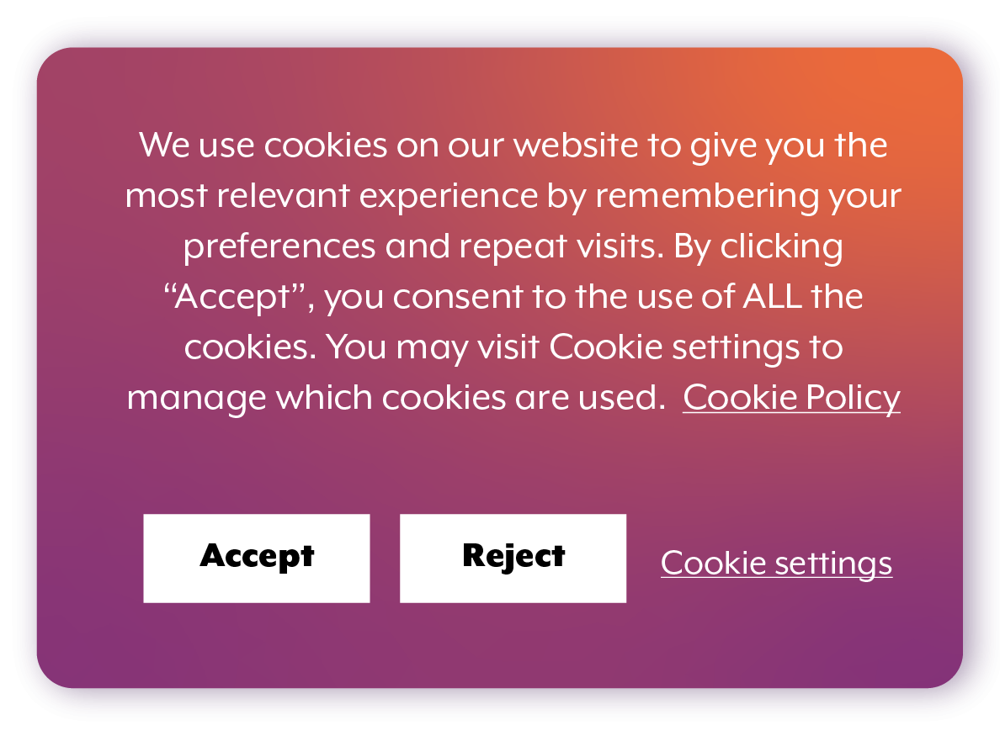

How Cookies Shape Privacy in the Modern Web
Cookies have existed since the introduction of the web, and to a large extent, they were developed with the aim of simplifying and making internet use more intimate. The first type occurs when you log into a site, and it is able to recall your name the next time you visit, or when your shopping cart retains what you added even after you leave the tab. This is made possible by a cookie that works in the background. These mini files help websites remember details about you, ensuring that every time you visit the website, you don't have to redo everything from scratch. The internet would become a lot less convenient without cookies. Each webpage would think that you were a new visitor, though you may have been there a few minutes ago. However, as much as cookies make the web look and seem friendly, they also present serious doubts about privacy, control as well as the extent to which our actions should be monitored on the web. In their purest form, cookies have a handy bit of information- your language preference, whether you prefer dark or light mode, or that you have successfully logged in to your account. They are usually neither harmful nor dangerous and in most cases, useful. They make our experience the same and make day-to-day browsing a bit less tiresome. The place where things get tricky is when cookies start storing information that is not so evident. Others deploy them not only to aid the site you are communicating with but to spy on and have a better insight into your behavior at a far more profound level. One cookie may have the information about the pages that you have opened, the duration of your stay, the goods that you have seen, and the links that you have clicked. When a significant part of these is put together, there is a lot they will tell you about your own habits and interests. The actual change in privacy of the internet was with the evolution of third party cookies, cookies that are not of the site you are surfing but rather placed by other companies in the site. Such companies could operate ads, analytics, or other services. Their cookies also update whenever you open up a web page that contains their code. With the course of time, this enables them to trace you on the internet even without having to interact with them. They are able to know what you read, what you buy, and what you search several times. This type of cross-site tracking has significantly contributed to the development of online advertising. As an illustration, when you visit a pair of shoes on a particular site, you might start seeing shoe advertisements all over the next few days. It is not magic and coincidence--this is the third-party cookies putting a profile of your browsing behavior together. Most of the users did not even know the extent to which their activity was being tracked. Cookies work in the background, and due to their size, a majority of people are not aware of their existence unless they observe a cookiebanner. Due to the increase in awareness, there also arose worries about how businesses were utilizing personal data. Citizens started doubting the suitability of websites being permitted to gather so much information without disclosing it. It resulted in significant debates regarding digital rights and the role of companies to ensure the privacy of users. These issues would later on result in significant privacy regulations such as the General Data Protection Regulation (GDPR) in the European Union, and the California Consumer Privacy Act (CCPA) in the United States. This legislation compelled websites to clarify the nature of cookies they employ and the reasons. This is the reason why most of the websites today present pop-ups requesting to accept cookies storage on your computer. Although these banners may be irritating, they are a way to provide more control over the personal data of people. Rather than websites passively following you around, they will now have to inquire whether that is something you like. Meanwhile, the browsers also started intervening. Safari and Firefox have been early adopters of blocking a wide range of tracking cookies by default. Google Chrome, which is highly engaged in the advertising business, also said it would get rid of third-party cookies. The specified changes constitute a significant shift in the way the contemporary web treats privacy. The companies that were keen on tracking users are being compelled to reevaluate their business model and move towards other more less intrusive forms of data collection. Cookies are not the only problem with privacy, and deleting them does not necessarily fix privacy. At the moment, some of the tracking means are limited, and the companies tend to seek out alternative technologies that can be used to reach the same objectives. One such example is the use of device fingerprinting that can identify a user using his device features rather than using cookies. Others seek out new browser-based offerings that attempt to cluster users together in terms of their interests as opposed to following them individually. It is even more difficult sometimes to consider that these tools can be even more difficult to spot than cookies, leading people to continue questioning: Are we really gaining privacy or merely other kinds of tracking? Nonetheless, the discussion on cookies has already influenced the internet in significant ways against all odds. It has promoted greater openness, increased user agency, and a greater discussion of what digital privacy ought to be. Users are now much conscious of web tracking of them. Numerous individuals are seeking features that are privacy-aware, add extensions that prevent tracking, or opt to use a more aggressive protection of their data by their browsers. At the end of the day, cookies are either good or bad. They are merely tools, which will either be utilized to enhance the user experience or quietly collect information in a manner that could go unnoticed by the users. The key is balance. They have to offer customized and easily accessible experiences to their users, yet they have to consider the privacy of their users and be transparent regarding the data they gather. With the further development of the web, the presence of cookies may change as well; however, the significance of privacy is bound to increase. It is crucial to comprehend how cookies are forming the modern day browsing environment as a first step towards living in a digital world where our information is now a precious commodity. 